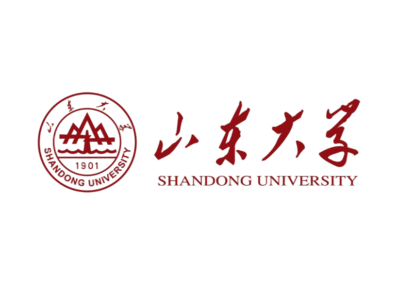

Home
Travel Guide
Life Guide
Contact Us
CN
EN
FR
Production Team
15532059593

Web Production
Yang Leyan (Software College)
Page Design
Luo En (School of Journalism and Communication)
English-French Translation
Zeng Cancan (School of Foreign Languages)
Zhang Xinru (School of Foreign Languages)
Documentation Provider
Shi Tianjie (School of History)
Wang Hongtao (School of History)
Li Longxuan (School of History)
Huang Yirong (School of History)